查看所有Project Dataset
用途
查看你的 Project 內的所有 Dataset 資訊
操作步驟
Original Dataset
點擊Project上的Dataset按鈕進入Dataset頁面，即可顯示所有Project Dataset
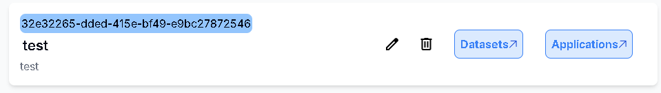
新增Project Dataset
用途
放入你想要訓練的Original Dataset或是已訓練完成的Training Dataset
操作步驟
Original Dataset
點擊右上角的Upload Original Dataset 按鈕
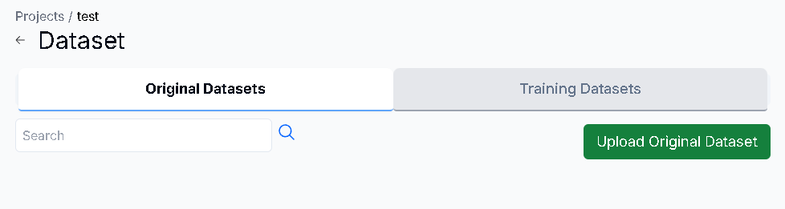
輸入Dataset名稱及描述後，點擊Select File按鈕，即可上傳你的Dataset壓縮檔(支援.zip)，上傳完後按下Create按鈕
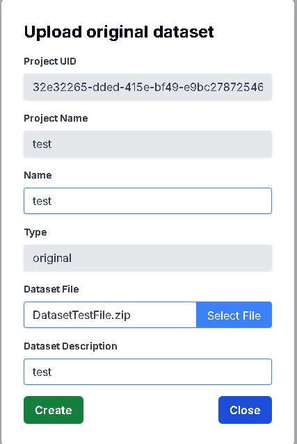
Original Dataset新增成功
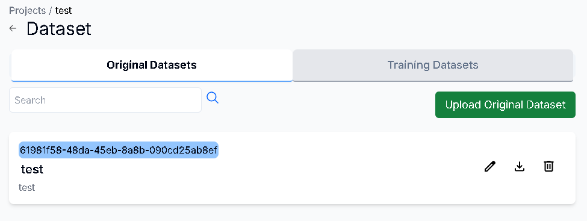
Training Dataset
點擊Original Datasets右側的Training Datasets按鈕，並按下Upload Training Dataset 按鈕
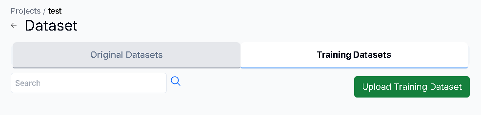
輸入Dataset名稱及描述後，點擊Select File按鈕，即可上傳你的Dataset壓縮檔(支援.zip)，上傳完後按下Create按鈕
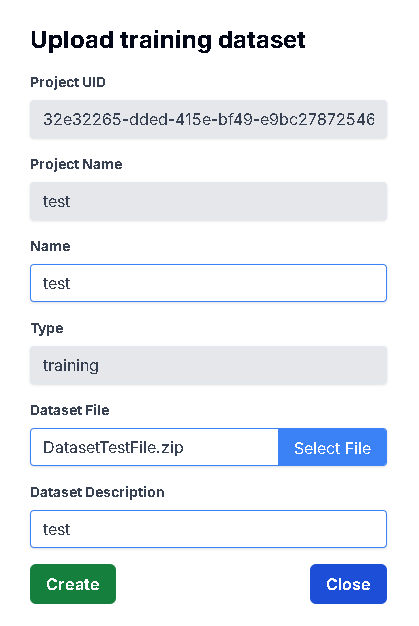
Training Dataset 新增成功
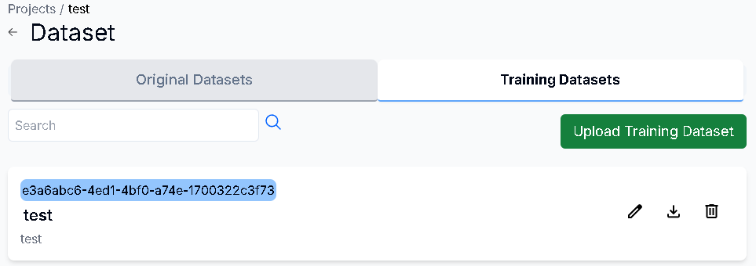
更新Original/Training Dataset
用途
更新你的 Original/Training Dataset 資訊
操作步驟
點擊右方的Edit圖示
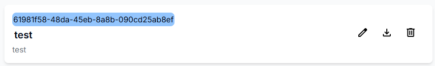
輸入更新的Dataset資訊，或是按下Select File即可重新上傳檔案。完成後按下Update按鈕
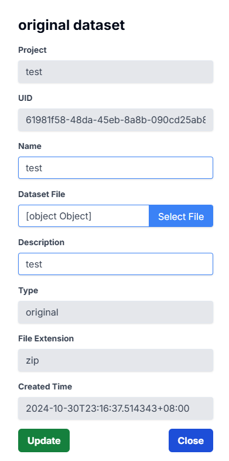
Dataset更新成功
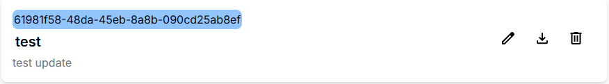
下載Original/Training Dataset
用途
確認上傳的 Original/Training Dataset 檔案正確，以及避免檔案消失
操作步驟
點擊右方的Download圖示，在下載紀錄按下保留檔案，即可下載成功
搜尋Original/Training Dataset
用途
找尋你所需的 Original/Training Dataset 資訊
操作步驟
在Search框中輸入你要尋找的Dataset名稱後按下放大鏡圖示
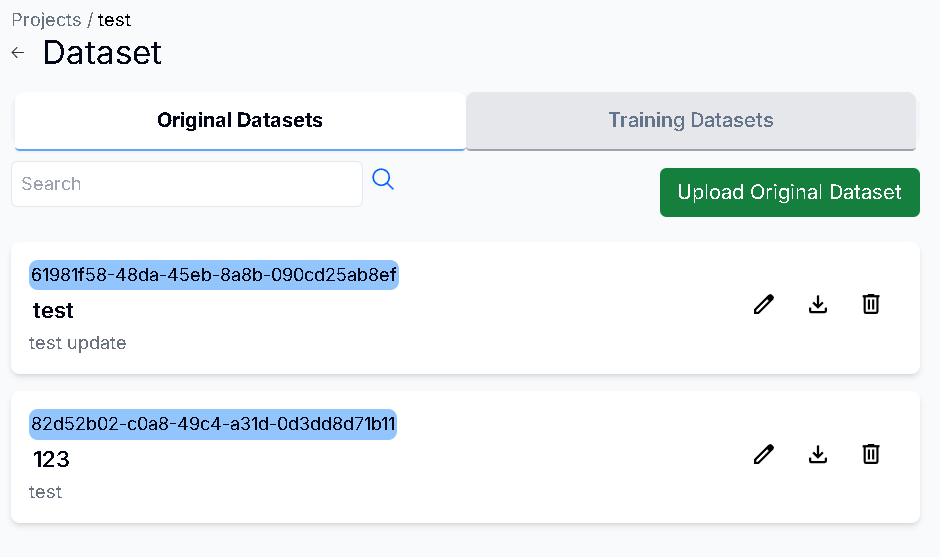
Dataset搜尋成功
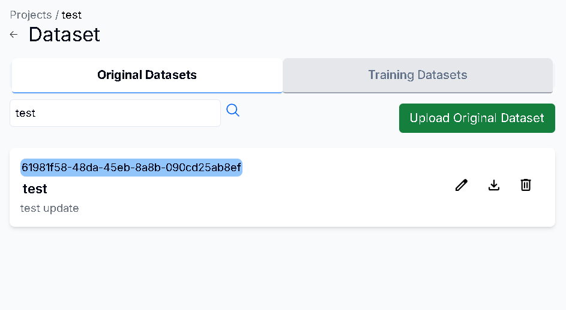
刪除Original/Training Dataset
用途
刪除已不需要的 Original/Training Datasset 資訊
操作步驟
點擊右方的Delete圖示
按下Delete按鈕即可刪除成功